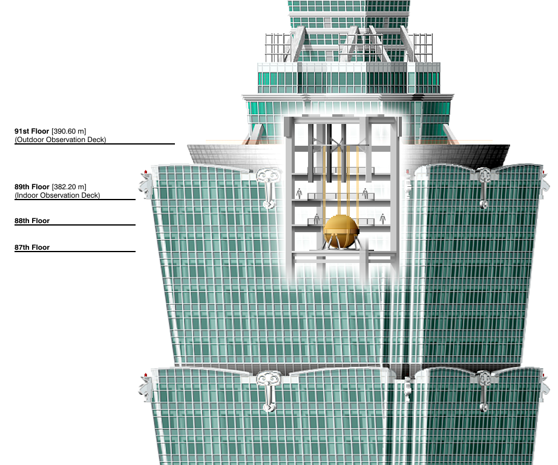

Загальні відомості
Тайбей 101 став першим побудованим у світі хмарочосом, що перевищив висоту півкілометра, першим рекордним за висотою будинком з побудованих у XXI столітті, був найвищим з 2004 по 2008 рік у світі та з 2003 по 2007 рік в Азії. Є десятим за висотою у світі , п'ятим за висотою в Азії , найвищим на Тайвані.
Будівництво хмарочоса розпочалося у 1999 році . Офіційне відкриття відбулося 17 листопада 2003 року , в експлуатацію будинок було введено 31 грудня 2003 року . Вартість хмарочоса становила 1,7 млрд доларів.
У цьому хмарочосі знаходяться найшвидші ліфти у світі, що піднімаються зі швидкістю 60,6 км/год. З п'ятого поверху до оглядового майданчика 89-м можна доїхати за 39 секунд.
Будівля зі скла , сталі та алюмінію підтримують 380 бетонних опор, кожна з яких йде в землю на 80 м. Небезпека обвалення під час урагану або землетрусу знижує величезний 660-тонний шар-маятник, поміщений між 87 і 91 поверхами. За словами розробників, вежа зможе витримати землетрус такої сили, який буває в цій місцевості раз на 2500 років.
Власником будівлі є Тайбейська фінансова корпорація , вона управляється міжнародним підрозділом американської корпорації міських продажів зі штаб-квартирою в Чикаго . Назва, яка спочатку передбачалася для будівлі - Тайбейський світовий фінансовий центр - походить від назви власника.
Будівля є одним із головних символів сучасного Тайбею та всього Тайваню. Має 101 надземний та 5 підземних поверхів. Його архітектурний стиль у дусі постмодернізму поєднує сучасні традиції та давню китайську архітектуру. Багатоповерховий торговельний комплекс у вежі містить сотні магазинів, ресторанів та клубів.
Конструкція
Тайбей 101 сконструйований для експлуатації в природних умовах, типових для Південно-Східної Азії - тут нерідкі тайфуни та землетруси . Інженери, які працювали над будівлею, заявляють, що вона може витримати пориви вітру до 60 м/с (216 км/год) та сильні землетруси, які бувають у регіоні раз на 2 500 років.
Завданням інженерів було спроектувати хмарочос , одночасно не дуже жорсткий для того, щоб протистояти сильним вітрам і, в той же час, міцний, щоб запобігти поперечним зміщенням (бічний зсув). Низька жорсткість запобігає пошкодженню конструкції при сильних згинальних моментах , при цьому повинен зберігатися високий рівень комфорту співробітників та відвідувачів вежі, крім того, неприпустимі деформації, що призводять до додаткового надлишкового навантаження на панелі скління та на перегородки. Зазвичай збільшення міцності застосовують посилення конструкції, наприклад, розкосами . Також, висота Тайбей 101 пред'являла інженерам додаткові вимоги щодо стійкості та міцності, що вимагало впровадження інноваційних методів будівництва.
Міцність і одночасно нежорсткість вежі досягається, в тому числі, через застосування в будівництві високоякісної сталі. Будівлю підтримують 36 колон, включаючи вісім головних колон з бетону з міцністю 70 МПа. Кожні вісім поверхів аутригерні ферми з'єднують колони в ядрі будівлі із зовнішнім навантаженням.
Перераховані вище особливості конструкції, а також міцність фундаменту роблять Тайбей 101 одним з найстійкіших будівель, коли-небудь зведених людиною. Фундамент посилено 380 палями, забитими на 80 метрів у землю, з них близько 30 метрів у скельній основі. Кожна паль має діаметр 1,5 метра і може нести навантаження в 1000-1300 тонн. Стійкість конструкції пройшла випробування у 2002 році, коли 31 березня в Тайбеї стався землетрус силою 6,8 бала. Через землетрус було зруйновано два крани, встановлені на спорудженій будівлі, загинуло 5 людей. Обстеження показало, що ніякої шкоди землетрусом вежі не було заподіяно, і будівництво відновилося.
Фірмою Thornton-Tomasetti Engineers разом з Evergreen Consulting Engineering був спроектований 660-тонний сталевий маятник, що є інерційним демпфером коливань. Його ціна становила 4 мільйони доларів. Підвішений на 87-91 поверхах, маятник коливається, компенсуючи рухи будівлі, спричинені сильними поривами вітру. Його сфера, найбільша у світі, складається з 41 сталевої пластини, кожна завтовшки 125 мм, що разом становить 5,4 м у діаметрі. Два інших гасителі коливань, кожен вагою 6 тонн знаходяться на вершині шпиля. Вони пом'якшують удари вітру, які діють верхню частину будівлі. Енергія коливань, накопичена демпферами, гаситься системою пружин, що розташовані під демпферами.
Башта покрита подвійним склінням характерного синьо-зеленого кольору. Це скління захищає співробітників від спеки та ультрафіолету.
Символізм
Число поверхів має і поштовий підтекст: 101 – це поштовий код Тайбейського міжнародного бізнес-центру. Також число 101 може бути інтерпретовано як запис у двійковій системі числення , що широко використовується в IT-індустрії, основі економіки Тайваню.
У конструкції вежі можна виділити вісім секцій, кожна з яких складається із восьми поверхів. У китайській культурі число 8 асоціюється з статком, процвітанням та удачею. У цифрових технологіях число 8 асоціюється з байтом , який зазвичай приймається за одиницю вимірювання обсягу інформації.
Повторювані сегменти башти нагадують архітектурні ритми традиційних в даному регіоні Азії пагод (башт, що з'єднують небо та землю), також лінія башти може бути інтерпретована як кубічно стилізовані стебло бамбука (символ навчання та зростання) та початок кукурудзи . Чотири диски, розташовані на кожному фасаді будівлі, символізують монети. Емблема, розташована над входом у вежу — три золоті монети у стародавньому стилі з діркою в центрі — зроблені у формі, що нагадує арабські цифри 1-0-1.
Вигнуті елементи оформлення в традиційному стилі руї є складовою дизайну будівлі. Руї - стародавній символ, який асоціюється з райськими хмарами, його символічне значення в китайській культурі - зцілення та захист. Кожен з орнаментів руї на фасадах вежі має щонайменше 8 метрів заввишки. Хоча форма кожного з руї вежі виконана у традиційному стилі, виконання руї з металу є сучасним нововведенням.
Характер нічного підсвічування будівлі, яскраво-жовтої в районі шпиля, робить Тайбей 101 схожим на гігантську свічку або смолоскип. З 6:00 до 10:00 щовечора підсвічування будівлі має один із семи основних кольорів спектру. Цей колірний цикл поєднує вежу з багатим символізмом веселки , що традиційно розглядається як мост між землею і небом або сполучною ланкою між людьми в різних кінцях світу. Кожен колір відповідає своєму дню тижня:
- Понеділок
- Вівторок
- Середа
- Четвер
- П'ятниця
- Субота
- Неділя
На Тайбей 101 зробило великий вплив філософське вчення фен-шуй . Фен-шуй знайшов відображення, наприклад, у фонтані біля східного входу до вежі. Куля на вершині обертається у напрямку вежі. Весь фонтан можна розглядати як витвір мистецтва: поєднання в ньому каменю та води контрастує зі склом та металом, з якого побудована вежа. Крім того, згідно з вченням фен-шуй, Т-подібне перехрестя біля входу в вежу є джерелом позитивної енергії ци , яка йде від вежі. Прихильники фен-шуй вірять, що вода, яка біжить у такому місці, може зупинити витік ци з будівлі, повернувши потік енергії у зворотний бік.
Фотогалерея